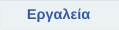
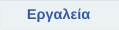

|
Enigma
Το Enigma είναι ένα παιχνίδι σκέψης εμπνευσμένο από το Oxyd που είχε κυκλοφορήσει για το Atari ST και το Rock’n'Roll για την Amiga. Ο σκοπός του παιχνιδιού είναι να ενώσουμε σε ζεύγη τις πέτρες Oxyd του ίδιου χρώματος. Απλό; Ναι. Εύκολο; Φυσικά όχι! Υπάρχουν κρυφές παγίδες, μπερδεμένοι λαβύρινθοι, ακτίνες λέιζερ, και το κυριότερο απ' όλα, αινιγματικοί γρίφοι που σας εμποδίζουν στην διέλευση προς τις πέτρες Oxyd.
|
|
Neverball
Το Neverball είναι ένα πολύ διασκεδαστικό παιχνίδι όπου βρίσκεστε σε μια επιφάνεια και προσπαθείτε να κυλήσετε την μπάλα μέσα από διάφορα εμπόδια προτού σας τελειώσει ο χρόνος. Είναι λίγο από παιχνίδι γρίφων, δράσης και ολοκληρωτικό τεστ δυνατοτήτων.
|
|
OpenArena
Το OpenArena είναι ένα γρήγορο παιχνίδι βολών πρώτου προσώπου με βάση την μηχανή ioquake3. Έχει πολλούς τύπους παιχνιδιών, όπως deathmatch, capture the flag κτλ και πολλούς χαρακτήρες να διαλέξετε.
* Αποσυμπιέστε τον φάκελο σε κάποιο σημείο του υπολογιστή σας και τρέξτε το openarena.exe |
|
Briquolo
Το BRIQUOLO είναι ένα παιχνίδι breakout σε 3D αναπαράσταση που βασίζεται σε OpenGL. Με την βάση σας θα πρέπει να χτυπήσετε το μπαλάκι στην σωστή γωνία για να διαλύσετε σταδιακά τις πίστες από τουβλάκια.
* Αποσυμπιέστε τον φάκελο σε κάποιο σημείο του υπολογιστή σας και τρέξτε το briquolo.exe
|
|
Sokoban YASC
Το Sokoban YASC (Yet Another Sokoban Clone) είναι ένα πολύ απλό παιχνίδι. Σκοπός του παιχνιδιού είναι να τοποθετήσετε όλα τα κιβώτια στην “αποθήκη” στους προκαθορισμένους χώρους αποθήκευσης. Ακούγεται εύκολο, έτσι; Βέβαια, υπάρχουν κάποιοι περιορισμοί. Δεν σας επιτρέπεται να τραβήξετε τα κιβώτια, μόνο να τα σπρώχνετε... Δεν μπορείτε να σπρώχνετε περισσότερα από ένα κιβώτιο τη φορά... Δεν μπορείτε να περάσετε ένα κιβώτιο από τοίχο.
|
|
Billard GL
Το BillardGL είναι μια προσομοίωση μπιλιάρδου σε OpenGL, η οποία αναπτύχθηκε στο πλαίσιο του μαθήματος "Computergraphics" στο Πανεπιστήμιο του Freiburg (Γερμανία). Διατίθεται κάτω από την άδεια GPL.
|
|
WarMUX
Το WarMUX (πρώην Wormux) είναι ένα διασκεδαστικό παιχνίδι 2D όπου πολεμούν μεταξύ τους διασκεδαστικά ζωάκια με αστεία όπλα. Μερικά όπλα όπου μπορείτε να χρησιμοποιήσετε κατά τη διάρκεια της μάχης είναι: Δυναμίτης, ρόπαλο του baseball, τηλεμεταφορά, ρουκέτες, χειροβομβίδες, πολυβόλο, καραμπίνα κ.α. Υπάρχουν πάρα πολλοί χάρτες που θα ικανοποιήσουν όλα τα γούστα! Το WarMUX είναι επίσης πολύ παραμετροποιήσιμο και διαθέτει ομάδες μάχης, από εξωγήινους έως κότες!!!
|
|
Secret Maryo Chronicles
Το Secret Maryo Chronicles είναι ένα ανοιχτού κώδικα δισδιάστατο παιχνίδι πλατφόρμας με σχέδιο και θέμα παρόμοιο με τα κλασικά διάσημα παιχνίδια. To SMC μπορεί να τρέξει σε μια μεγάλη γκάμα ηλεκτρονικών υπολογιστών χάρη στην Open Graphics Library για το καλύτερο δυνατό graphic design και επιδόσεις.
|
|
Sauerbraten
To Cube 2: Sauerbraten είναι ένα δωρεάν multiplayer/singleplayer παιχνίδι FPS, που δημιουργήθηκε ύστερα από σημαντικό επανασχεδιασμό του Cube FPS. Όπως ακριβώς το αρχικό Cube, ο στόχος αυτού του παιχνιδιού δεν είναι απαραίτητα η δημιουργία υψηλών χαρακτηριστικών και ανώτερων γραφικών, αλλά η δημιουργία υψηλής γεωμετρίας που επιτρέπει να γίνουν δυναμικές αλλαγές στο παιχνίδι, ώστε να έχει ο παίκτης ένα διασκεδαστικό gameplay σε μια σύγχρονη κομψή παιχνιδομηχανή. |
|
Scorched 3D
Το Scorched 3D είναι ένας εκσυγχρονισμός του κλασικού παιχνιδιού του DOS Scorched Earth "Η μητέρα όλων των παιχνιδιών" επί του οποίου βασίζεται. Το Scorched 3D ενσωματώνει ένα ζωντανό τρισδιάστατο τοπίο που περιλαμβάνει κινούμενα αεριωθούμενα, πολεμικά πλοία, το νερό, ακόμη και πτηνά, εκτός φυσικά και από την πληθώρα τανκ και βλημάτων. Άλλα στοιχεία είναι το LAN και το internet παιχνίδι αλλά και η ενσωματωμένη επική μουσική. |
|
TripleA
Το TripleA είναι παιχνίδι στρατηγικής πίστας στο οποίο ο κάθε παίκτης κινεί, δημιουργεί τον στρατό του, δίνει μάχες, υποχωρεί και καταλαμβάνει περιοχές με φόντο τις δυνάμεις του 'B Παγκοσμίου Πολέμου. Έρχεται με πολλούς τύπους αποστολών και πάνω από 100 διαφορετικούς χάρτες που μπορούν να μεταφορτωθούν από την κοινότητα των χρηστών. Υποστηρίζει single player εναντίον AI, hot seat, παιχνίδι με ηλεκτρονικό ταχυδρομείο, και σε απευθείας σύνδεση με λόμπι. |
|
xMoto
Το X-Moto είναι ένα 2D παιχνίδι πλατφόρμας motocross, όπου η φυσική παίζει τον σημαντικό ρόλο στο gameplay. Θα πρέπει να ελέγξετε την μηχανή σας, να την πιέσετε στα όριά της, αν θέλετε να έχετε την ευκαιρία να τερματίσετε σειρές από δύσκολες προκλήσεις. |
|
yo Frankie
Το Yo Frankie! είναι ένα ανοικτό παιχνίδι που δημιουργήθηκε από το Blender Institution, τμήμα του Blender Foundation. Είναι βασισμένο στο σύμπαν και τους χαρακτήρες της ταινίας που παράχθηκε δωρεάν το 2008 από το Blender Institute, το Big Buck Bunny.
* Αποσυμπιέστε τον φάκελο σε κάποιο σημείο του υπολογιστή σας, μεταβείτε στον φάκελο /yofrankie-win32 τρέξτε το yofrankie_player.exe |
|
Tremulus
Το Tremulus είναι ένα ελεύθερο, ανοικτό παιχνίδι που συνδυάζει στοιχεία παιχνιδιών FPS και RTS. Οι παίκτες μπορούν να επιλέξουν από 2 μοναδικές φυλές, τους εξωγήινους και τους ανθρώπους. Οι παίκτες και στις δύο ομάδες είναι σε θέση να χτίσουν κατασκευές στο παιχνίδι όπως σε ένα RTS. Οι δομές αυτές παρέχουν πολλές λειτουργίες, το πιο σημαντικό είναι το spawing. Οι παίκτες-κατασκευαστές πρέπει να διασφαλίσουν ότι υπάρχουν αρκετά spawing points αλλιώς οι παίκτες της ομάδας τους δεν θα είναι σε θέση να επανέλθουν στο παιχνίδι μετά το θάνατο(respawn). Άλλες δομές παρέχουν αυτοματοποιημένη άμυνα βάσης (σε κάποιο βαθμό), λειτουργίες θεραπείας και πολλά άλλα. |
|
Battle for Wesnoth
Το Battle for Wesnoth είναι ένα turn-based παιχνίδι τακτικής στρατηγικής σε ένα φανταστικό κόσμο. Στόχος του παίκτη είναι να δημιουργήσει ένα μεγάλο στρατό, μετατρέποντας σταδιακά νεοσύλλεκτους σε βετεράνους. Στα ανώτερα επίπεδα, μπορείτε να καλέσετε τους σκληρότερους πολεμιστές σας και να αποτελέσουν μια θανάσιμη δύναμη κατά της οποίας κανένας δεν μπορεί να αντισταθεί! |
|
Warzone 2100
Το Warzone 2100 παιχνίδι στρατηγικής που έχετε την διοίκηση των δυνάμεων του Project, σε μια επική μάχη για την ανοικοδόμηση του κόσμου μετά την σχεδόν ολοκληρωτική καταστροφή της ανθρωπότητας από πυρηνικούς πυραύλους. Το παιχνίδι προσφέρει campaign, multi-player και single-player. Ένα εκτεταμένο tech δέντρο μονάδων με πάνω από 400 διαφορετικές τεχνολογίες, σε συνδυασμό με το σύστημα σχεδιασμού μονάδας που επιτρέπει την δημιουργία μιας ευρείας ποικιλίας μοναδικών μονάδων και τακτικής. |
|
Warsow
Αν βρεθείτε σε ένα φουτουριστικό σαν καρτούν κόσμο όπου RocketLauncher-wielding χοίροι και lasergun-cyberpunks περιφέρονται στους δρόμους, τότε βρίσκετε στο Warsow! Η Ταχύτητα και η κίνηση, είναι το κυρίως θέμα του Warsow. Πιάσε τα power-ups πριν από τον εχθρό σου, βάλε τη βόμβα πριν κάποιος σε δει και κλέψε την σημαία του εχθρού πριν κάποιος καταλάβει τι συμβαίνει! |


 
